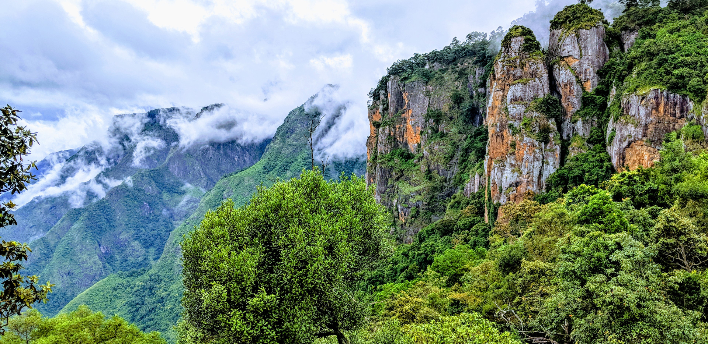

Welcome to my travel bucket list — a personal collection of dream destinations, epic experiences, and unforgettable adventures I hope to explore in this lifetime. From hiking through Patagonia to witnessing the Northern Lights in Iceland, each journey on this list is fueled by a love for discovery, culture, and the beauty of the unknown. Whether you're here for inspiration or planning your own great escape, I hope this list sparks your wanderlust and encourages you to chase the world one place at a time.
Kerala
Kerala, located in the southwestern region of India, is known for its lush landscapes, serene backwaters, rich cultural traditions, and high literacy rates. Often referred to as "God's Own Country," Kerala offers a unique blend of natural beauty, heritage, and vibrant festivals. Popular attractions include the backwaters of Alappuzha, the tea gardens of Munnar, the beaches of Kovalam, and the historic town of Fort Kochi.
Kashmir
Kashmir, known as the "Paradise on Earth," is a breathtaking region in northern India famed for its snow-capped mountains, serene lakes, lush valleys, and rich culture. From the iconic Dal Lake and houseboats in Srinagar to the meadows of Gulmarg and Pahalgam, Kashmir offers unforgettable experiences year-round. We are here to help you explore its beauty, heritage, and warm hospitality.
Ooty
Ooty, the "Queen of Hill Stations," is nestled in the Nilgiri Hills of Tamil Nadu. Known for its cool climate, scenic landscapes, tea gardens, and colonial charm, it is a perfect getaway for nature lovers and adventure seekers. From the Nilgiri Mountain Railway to the lush Botanical Gardens and serene Ooty Lake, we help you explore the beauty and tranquility of this timeless hill station.

Kodaikanal
Kodaikanal, nestled in the Western Ghats of Tamil Nadu, is a charming hill station known for its mist-covered valleys, cool climate, and serene natural beauty.
Perched at an altitude of 2,133 meters (7,000 feet), it offers a refreshing escape from the heat and hustle of city life.
Valparai
Valparai, located in the Anamalai Hills of Tamil Nadu, is a peaceful hill station known for its sprawling tea estates, lush green landscapes, and abundant wildlife.
Less commercialized than other hill stations, Valparai offers a serene, untouched charm perfect for nature lovers and solitude seekers.
Delhi
Delhi, the capital city of India, is a vibrant blend of ancient history and modern energy. With its majestic monuments, bustling bazaars,.
From the grand Red Fort and towering Qutub Minar to the serene Lotus Temple and lively streets of Chandni Chowk, every corner tells a story.